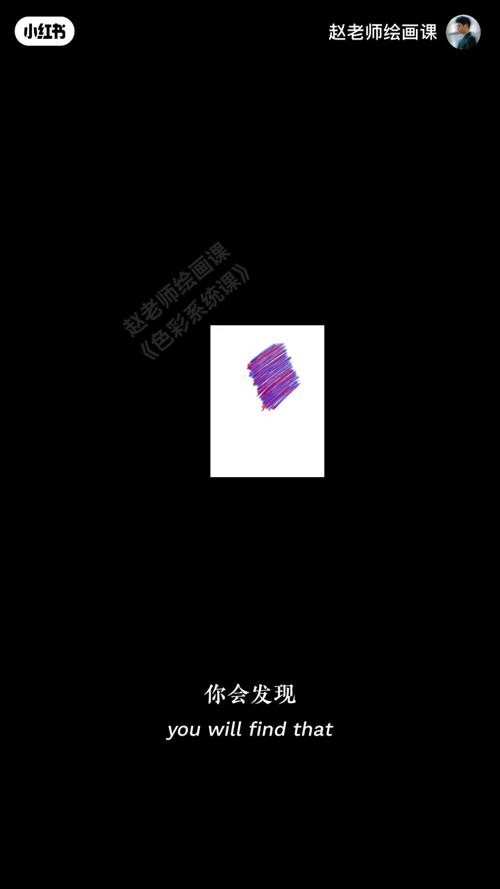
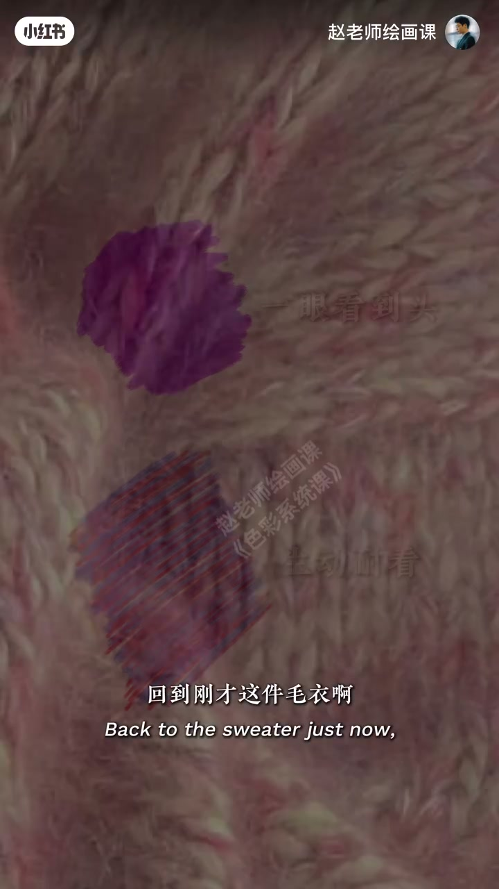
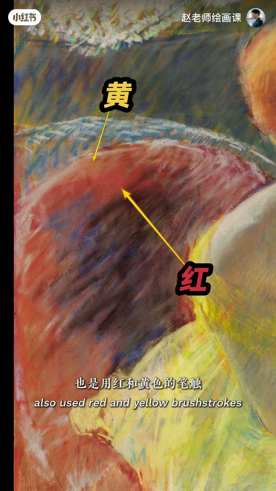
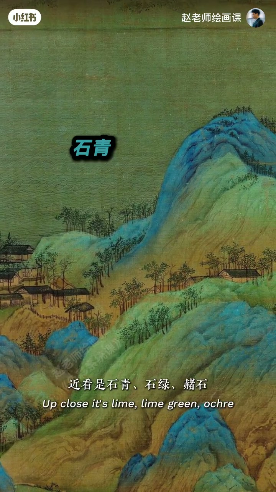

内容要点
毛衣与梵高大梧桐看似无关，却都在让眼睛参与调色。实验：想画紫若一笔涂满，一眼见底；先蓝后红并置，退后两步眼睛混成更生动耐看的紫——色相并置。毛衣黄红线远看偏橙胜过机染平橙；梵高梧桐紫、卡萨特沙发橙同理。中国画里《千里江山图》近看石青石绿赭石交错，退远成磅礴青绿。把色彩当视觉游戏，就不难。
知识结构
平涂紫一眼见底；蓝红并置由眼睛混成更耐看的紫。
毛衣黄红远看橙；梵高蓝红紫；卡萨特红黄通透橙。
近看矿物色交错，退远成宏大青绿；视觉游戏心态。
别只涂「正确的平均色」：把相关色相并置交错，让眼睛完成混合，颜色才会鲜活耐看。
00:00-00:41小实验：平涂 vs 蓝红并置
开场并置毛衣与梵高大梧桐：两者无关，却都让眼睛帮他们调色。想画紫色，常见做法是一笔笔涂满；换方法——先几笔蓝，再加几笔红，后退两步，眼睛已把它们混成紫色。
平涂那块「一眼能看到头」；并置这块因红蓝冷暖变化更生动耐看。原理名：色相并置。00:28 蓝红斜向笔触是可指认证据。

00:41-01:14毛衣、梵高、卡萨特：同一手法
回到毛衣：黄与红线交织，稍退远就成橙感，比机器直染的橙更鲜活耐看。梵高画里梧桐紫全是蓝红交错并置；卡萨特处理沙发也用红黄笔触并置，得到通透橙色。
00:45 平涂紫对比红蓝并置块；01:10 「黄」「红」箭头钉在沙发笔触上。


01:14-01:44千里江山：近看交错、远看青绿
原理非西方独有：王希孟《千里江山图》近看石青、石绿、赭石层层交错叠加，一旦退远便成磅礴宏大的青绿山河。学好色彩不难——把它想象成视觉游戏，一切会简单起来。
01:25 大字「石青」落在青绿山水局部。

完整转录（44段）
以下文本由 Whisper medium 模型自动转录，可能存在少量识别误差，已尽可能修正。
这是一件毛衣
这是樊高的大梧桐
两者毫无关联
但都做了同一件事
就是让你的眼睛帮他们调色
为什么这样说
来 我们做个小实验
如果你想画紫色
会不会这样
一笔一笔的涂满
那如果我们换一方法
先画几笔蓝
再在里面加几笔红
现在后退两步
你会发现你的眼睛
已经把它们混成了紫色
刚才那块紫
就是一眼能看到头的感觉
而现在这块
因为有红和蓝的冷暖变化
所以显得更加生动和耐看
这个原理叫色相并制
回到刚才这件毛衣
黄和红线交织在一起
但你稍微退远一看
它就会变成一种橙的感觉
和机器直接染出来的橙色相比
明显的更加鲜活和耐暖
《樊高》的画里
梧桐树上的紫色
全是蓝和红的交错并制
卡萨特在处理这块沙发的时候
也是用红和黄色的笔触并制融合
得到了一种通透的橙色
其实这个原理并不只是西化独有
中国古代绘画里其实早就出现了
你看王熙孟的《千里江山图》
近看是石青石绿
褶食这些颜色一层层的交错叠加
但你一旦退远
它就变成捧一又宏大的情侣山河
其实啊学好色彩一点都不难
当你把它想象成一种视觉游戏的时候
一切都会变得简单起来